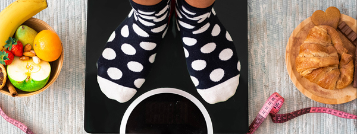

¿QUE ES LA OBESIDAD?
¿Qué es la obesidad y cuáles son sus síntomas?
La obesidad es una enfermedad crónica, producida por el consumo excesivo de grasas, azúcares y carbohidratos, lo que provoca la acumulación de grasa en nuestro cuerpo. Otra causa es la poca o nula actividad física en la vida diaria.
Esta enfermedad esta relacionada con factores biológicos, sociales, culturales y psicológicos. Idealmente su tratamiento debe ser manejado de manera integral por un grupo de especialistas: médicos, nutriólogos, psicólogos y expertos en activación física.
Sus síntomas son:
*Aumento de peso
*Dificultad para respirar (durante el día y al dormir)
*Cansancio
*Fatiga y dolor de las articulaciones en rodillas y pies
*Reflujo y acidez
*Hinchazón
*Dolor y calambres en las piernas
*Pérdida de control para orinar

Datos sobre la obesidad en México
1 : 42.6% de los hombres mayores de 20 años de edad, presentan sobrepeso y 26.8% obesidad. (Fuente: Encuesta Nacional de Salud y Nutrición 2012).
2 : 35.5% de las mujeres mayores de 20 años de edad, presentan sobrepeso y 37.5% obesidad. (Fuente: Encuesta Nacional de Salud y Nutrición 2012).
3: En México, aproximadamente 7 de cada 10 adultos tienen exceso de peso.
Recomendaciones
* Debemos realizar al menos 30 minutos diarios de actividad física.
* La actividad física es todo movimiento del cuerpo en el que se requiere más energía comparada con el reposo, y puede ser caminar, correr, bailar, nadar, practicar yoga, podar el jardín, entre otros.
* Incluye en todas tus comidas del día una fruta o verdura; un cereal o leguminosa y productos de origen animal, además bebe dos litros (8 vasos) de agua.